Estado: pendiente de integración en Google Drive, revisión cruzada de citas APA y prueba externa de uso.
Secciones faltantes del equipo: 01_introduccion_y_objetivos.md, 04_datos_y_limpieza.md. No se reemplazaron con contenido atribuido a otros integrantes.
La guía del proyecto propone la estructura del marco teórico según el tipo de reto. Este proyecto pertenece a la categoría de negocios, así que se adapta la estructura propuesta para los sistemas de recomendación en sus tres partes: la definición teórica del problema, las actividades de preprocesamiento general y los algoritmos de aprendizaje automático usados para resolverlo. La evaluación de los algoritmos se incluye al final de la tercera parte.
Una empresa que conserva a sus clientes depende menos de atraer clientes nuevos, que suele ser más costoso. Christy et al. (2021) señalan que retener a los clientes es más importante que encontrar clientes nuevos y que segmentarlos según su comportamiento permite dirigir estrategias de mercadeo a cada grupo.
La recompra es la forma más directa de retención en el comercio minorista. Zhang et al. (2022) reportan que en la plataforma Tmall solo el 6.1% de los compradores vuelve a comprar, y citan estudios según los cuales un aumento de cinco por ciento en la tasa de recompra puede elevar las utilidades entre 25% y 95%. La predicción también tiene consecuencias económicas directas: en un torneo de modelos de abandono, Neslin et al. (2006) encontraron que las diferencias de exactitud entre propuestas cambiaban la rentabilidad de una campaña en cientos de miles de dólares.
Las promociones atraen muchos compradores nuevos, pero una parte de ellos solo aprovecha el descuento y no vuelve. Liu et al. (2016) describen a estos clientes como cazadores de ofertas de una sola vez y señalan que identificar a quienes pueden convertirse en compradores leales permite dirigirles las promociones, reducir su costo y aumentar el retorno de la inversión. El problema de este proyecto es el mismo: a cada cliente se le ofreció un cupón y se busca anticipar si volverá a comprar el producto después de usarlo.
Los cupones también se estudian como un problema de selección de clientes. Ren et al. (2021) proponen decidir a qué consumidores enviar cupones electrónicos a partir de su comportamiento anterior, primero segmentándolos y después ajustando un modelo distinto para cada segmento.
En un supermercado la relación con el cliente es no contractual: el cliente no avisa cuando deja de comprar, solo deja de hacerlo. Por eso la empresa debe inferir su lealtad a partir de su historial. Buckinx y Van den Poel (2005) estudiaron este entorno en un minorista de productos de consumo masivo y encontraron que las variables de comportamiento pasado fueron las mejores para predecir el abandono parcial de los clientes más leales. Martínez et al. (2020) predijeron si un cliente comprará en el mes siguiente a partir del momento y el valor de sus compras anteriores.
El modelo RFM resume el comportamiento de un cliente en tres medidas calculadas a partir de sus transacciones (Christy et al., 2021):
En el estudio de Buckinx y Van den Poel (2005), estas tres medidas fueron las mejores variables predictoras. Sin embargo, describen al cliente en general y no su relación con un producto específico. En un problema de recompra conviene agregar el historial del cliente con la categoría, la marca y el producto ofrecidos, de forma similar a los perfiles de usuarios, comercios, marcas, categorías y productos que construyeron Liu et al. (2016).
El problema se formula como una clasificación binaria. Cada cliente tiene una variable respuesta con dos valores: recurrente, si volvió a comprar el producto ofertado al menos una vez, o no recurrente. A partir del historial previo a la oferta, un modelo de aprendizaje automático estima la probabilidad de que el cliente sea recurrente. Con esa probabilidad, la empresa puede ordenar a sus clientes y priorizar a los de mayor probabilidad en una campaña. La competencia original mide los modelos con el área bajo la curva ROC (Kaggle, 2014).
Aunque el problema se relaciona con el mercadeo, no es un sistema de recomendación. Un sistema de recomendación ordena muchos productos para cada cliente según sus preferencias. Aquí cada cliente recibió una sola oferta y lo que se estima es si volverá a comprar ese producto. Las probabilidades del modelo sí podrían usarse después para decidir a quién enviar cupones.
Los datos de un negocio minorista suelen llegar como bitácoras de transacciones, con una fila por línea de compra. Antes de entrenar un modelo hay que transformarlas en una tabla con una fila por cliente.
La primera actividad es unir las transacciones con la información de cada cliente y de cada oferta, y resumirlas por cliente. Liu et al. (2016) concluyen que la construcción de variables fue el factor más importante de su solución, y Ahmad et al. (2019) muestran que agregar nuevas variables puede subir el AUC de un modelo de 84% a 93.3%. Por eso el preprocesamiento no es un paso mecánico, sino una parte central del modelado.
Dos cuidados son indispensables al agregar:
Las transacciones reales contienen registros que no son compras normales: montos negativos por devoluciones o descuentos, cantidades en cero y unidades de medida vacías. La decisión para cada caso depende de su significado; por ejemplo, un descuento forma parte del gasto neto del cliente y no debe eliminarse.
Los valores faltantes también pueden tener significado. Si un cliente nunca compró la categoría ofertada, la recencia de esa categoría no existe, y esa ausencia es información sobre el cliente. En esos casos se conserva el faltante y se agrega una variable que lo marca, en lugar de eliminar la fila.
Los valores atípicos son comunes en el gasto y la frecuencia de compra, que tienen colas largas. En lugar de eliminarlos, se puede reducir su influencia con una transformación logarítmica, que comprime los valores grandes y conserva el orden de los clientes.
Cada familia de algoritmos necesita una preparación distinta:
Los árboles de decisión y sus ensambles no dependen de la escala, así que pueden usar las variables sin transformar.
En los problemas de retención y recompra la clase de interés suele ser minoritaria. Con pocos casos positivos, un modelo que siempre prediga la clase mayoritaria alcanza una exactitud alta sin aportar información. Hay tres formas habituales de manejarlo:
La evidencia sobre el sobremuestreo no es concluyente: Verbeke et al. (2012) no encontraron mejoras significativas al aplicarlo en once conjuntos de datos de abandono de clientes. Burez y Van den Poel (2009) compararon métodos de muestreo con técnicas como los bosques aleatorios ponderados y recomiendan medir con el AUC, que no depende de un umbral de clasificación.
La literatura de predicción de recompra, abandono de clientes y respuesta a cupones ha usado una gama amplia de algoritmos:
| Estudio | Problema | Algoritmos | Resultado principal |
|---|---|---|---|
| Liu et al., 2016 | Recompra tras una promoción | Construcción de variables y entrenamiento de modelos | Las variables fueron el factor decisivo |
| Zhang et al., 2022 | Recompra tras una promoción | Factorización, regresión logística, XGBoost, LightGBM y apilamiento | El apilamiento subió el AUC en 0.01161 |
| Martínez et al., 2020 | Compra del mes siguiente | Varios métodos de aprendizaje automático | Gradient boosting fue el mejor |
| Larivière y Van den Poel, 2005 | Siguiente compra y abandono | Bosque aleatorio contra regresiones | El bosque aleatorio ajustó mejor |
| Buckinx y Van den Poel, 2005 | Abandono parcial en un minorista | Regresión logística, red neuronal y bosque aleatorio | Recencia, frecuencia y monto fueron las mejores variables |
| Lemmens y Croux, 2006 | Abandono en telefonía | Bagging y boosting de árboles | Ambos mejoraron la predicción |
| Verbeke et al., 2012 | Abandono en telefonía | Amplia gama de clasificadores | Muchos clasificadores rindieron parecido |
| De Caigny et al., 2018 | Abandono | Árbol, regresión logística, bosque aleatorio y un modelo híbrido | El híbrido igualó al bosque aleatorio |
| Ahmad et al., 2019 | Abandono en telefonía | Árbol, bosque aleatorio, gradient boosting y XGBoost | XGBoost fue el mejor |
| Ren et al., 2021 | Uso de cupones electrónicos | Segmentación, bosque de aislamiento y regresión logística | Segmentar redujo el desbalance |
| Lessmann et al., 2015 | Riesgo crediticio | 41 clasificadores | El bosque aleatorio es el punto de comparación recomendado |
Tres patrones se repiten. La regresión logística aparece como referencia en casi todos los estudios. Los ensambles de árboles, por bagging o por boosting, obtienen los mejores resultados o empatan con ellos en la mayoría de las comparaciones con datos tabulares de clientes. Las redes neuronales son competitivas en algunos estudios: Lessmann et al. (2015) encontraron que superan a la regresión logística, pero en datos tabulares no superan de forma consistente a los ensambles de árboles (Shwartz-Ziv y Armon, 2022; Grinsztajn et al., 2022).
La regresión logística modela la probabilidad de la clase positiva como una función logística de una combinación lineal de las variables (Cox, 1958). Sus coeficientes indican cómo cambia la probabilidad con cada variable, lo que la hace fácil de interpretar. Puede regularizarse para evitar el sobreajuste: la penalización L2 encoge todos los coeficientes y la L1 lleva algunos a cero. Supone que cada variable tiene un efecto lineal y aditivo sobre el logaritmo de la razón de probabilidades, por lo que necesita variables transformadas y escaladas.
El bosque aleatorio entrena muchos árboles de decisión, cada uno con una muestra con reemplazo de los datos y considerando en cada división un subconjunto aleatorio de variables. La predicción final promedia los árboles (Breiman, 2001). Captura relaciones no lineales e interacciones entre variables sin especificarlas, es poco sensible a los valores extremos y no necesita escalar las variables. Sus hiperparámetros principales son el número de árboles, la profundidad máxima, el tamaño mínimo de las hojas y la fracción de variables por división.
El gradient boosting construye árboles en secuencia, cada uno corrigiendo los errores de los anteriores en la dirección del gradiente de una función de pérdida (Friedman, 2001). Existen varias implementaciones:
Sus hiperparámetros principales son la tasa de aprendizaje, el número máximo de hojas por árbol, el tamaño mínimo de las hojas y la regularización.
El perceptrón multicapa es una red neuronal de capas totalmente conectadas que se entrena con retropropagación del error (Rumelhart et al., 1986). Su arquitectura se define por el número de capas ocultas, el número de neuronas por capa y la regularización. Puede aprender relaciones no lineales, pero es sensible a la escala de las variables y a la elección de hiperparámetros, por lo que requiere escalamiento y detención temprana del entrenamiento. Con pocas capas ocultas no se considera aprendizaje profundo.
Curva ROC y AUC. La curva ROC muestra la tasa de verdaderos positivos frente a la tasa de falsos positivos para todos los umbrales posibles. El área bajo esa curva, AUC, mide la capacidad del modelo para ordenar a los casos positivos por encima de los negativos: 0.5 equivale al azar y 1 a una separación perfecta (Fawcett, 2006). Como no depende de un umbral, es la medida adecuada con clases desbalanceadas (Burez y Van den Poel, 2009).
Métricas con umbral. Al fijar un umbral, cada cliente se clasifica como recurrente o no, y se construye la matriz de confusión con los verdaderos positivos, falsos positivos, falsos negativos y verdaderos negativos. De ella salen tres medidas:
Validación temporal. Un modelo de clientes se usa para predecir periodos futuros, así que debe evaluarse con datos posteriores a los de entrenamiento. Neslin et al. (2006) mostraron que los modelos de abandono conservan su desempeño cuando se aplican a datos recolectados tres meses después de los de entrenamiento, lo que respalda esta forma de evaluar.
Ajuste de hiperparámetros. Los hiperparámetros se eligen con un conjunto de validación separado del de prueba. Bergstra y Bengio (2012) mostraron que la búsqueda aleatoria encuentra configuraciones tan buenas o mejores que la búsqueda en rejilla con el mismo presupuesto de cómputo.
El trabajo se organizó en etapas encadenadas. Cada etapa tiene un cuaderno de Jupyter o un módulo de código en el repositorio, y cada una produce los archivos que usa la siguiente.
El conjunto de prueba de la competencia, con 151,484 clientes, no incluye la variable respuesta, así que no sirve para medir los modelos. Por eso la evaluación se hizo dentro de los 160,057 clientes con respuesta conocida, separándolos por la fecha de su oferta:
| Conjunto | Fechas de la oferta | Clientes | Tasa de recompra | Uso |
|---|---|---|---|---|
| Entrenamiento | 1 de marzo al 16 de abril de 2013 | 106,062 | 23.08% | Entrenar los modelos durante el ajuste |
| Validación | 17 al 23 de abril | 18,496 | 33.60% | Elegir los hiperparámetros y el umbral |
| Prueba | 24 al 30 de abril | 35,499 | 35.91% | Medir los modelos finales una sola vez |
La partición respeta el orden del tiempo por tres razones:
Después de elegir los hiperparámetros, los modelos finales se reentrenaron con entrenamiento y validación juntos, 124,558 clientes del 1 de marzo al 23 de abril, conservando los hiperparámetros y los umbrales elegidos. La semana de validación es la más parecida a la de prueba, y un modelo de producción debe aprovechar los datos más recientes disponibles. La semana de prueba nunca se usó para ajustar ni para elegir umbrales.
Esta decisión se tomó después de conocer el resultado de la primera versión de los modelos, entrenada solo hasta el 16 de abril. Por transparencia se reportan ambas versiones.
La semana de prueba contiene sobre todo ofertas que los modelos finales ya conocían. En cambio, la mayoría de los clientes del conjunto de prueba de la competencia recibió ofertas que no aparecen en el entrenamiento. Para medir ese caso, se hicieron cinco divisiones de los 124,558 clientes de entrenamiento y validación que reservan ofertas completas. En cada división se apartaron cinco ofertas para probar, se entrenó un modelo temporal con las demás y se verificó que ninguna oferta estuviera en ambos lados. Esos modelos temporales se descartaron después de evaluarlos.
Los algoritmos se eligieron a partir de la revisión bibliográfica y de las características de los datos:
| Característica de los datos | Consecuencia para la elección |
|---|---|
| Datos tabulares, una fila por cliente | Favorece a los ensambles de árboles |
| 160,057 clientes | Descarta métodos cuyo costo crece mucho con el número de filas |
| 37 variables de comportamiento y 5 identificadores de grupo con pocas categorías | Basta con codificar los grupos; no se necesitan modelos para categorías con miles de niveles |
| Faltantes con significado en la recencia de la categoría | Conviene un algoritmo que use el faltante como información |
| Colas largas y valores extremos | Los árboles los toleran; los modelos lineales y las redes necesitan transformarlos |
| 27.14% de clientes recurrentes | Ponderar las clases y medir con el AUC |
| Uso en una aplicación | El modelo debe dar probabilidades y predecir rápido |
Se seleccionaron cuatro algoritmos de aprendizaje automático, uno por cada familia que la literatura identifica como relevante:
| Algoritmo | Papel en el proyecto | Razón |
|---|---|---|
| Regresión logística | Referencia | Es el estándar de la industria, se interpreta con facilidad y ya se había usado en la fase exploratoria |
| Random Forest | Ensamble por bagging | Lessmann et al. (2015) lo recomiendan como punto de comparación obligatorio |
Gradient Boosting, con HistGradientBoostingClassifier |
Ensamble por boosting | Fue el mejor en los estudios más parecidos (Martínez et al., 2020; Ahmad et al., 2019) y maneja los faltantes de forma nativa |
| Perceptrón multicapa | Red neuronal | Permite comprobar si una red neuronal supera a los árboles en estos datos |
Para gradient boosting se eligió la implementación de scikit-learn y no XGBoost ni LightGBM por tres razones:
Se descartaron otros algoritmos por las siguientes razones:
El proyecto se desarrolló en Python con scikit-learn, pandas y numpy, y el código se versionó en GitHub. Los recursos de cómputo, los lenguajes, las bibliotecas y sus versiones se detallan en la sección de herramientas utilizadas. Las tecnologías de la aplicación se justifican en la sección que la describe.
El análisis exploratorio, el entrenamiento y el ajuste de los modelos se ejecutaron en una computadora personal con sistema operativo Windows 11, procesador Intel Core i5-12400 de 6 núcleos físicos y 12 hilos, 32 GB de memoria RAM y una tarjeta gráfica NVIDIA GeForce RTX 4060 Ti con 8 GB. Los algoritmos de scikit-learn usados en este proyecto se ejecutan en el procesador, por lo que la tarjeta gráfica no intervino en el entrenamiento.
La evaluación de los modelos en la semana de prueba se hizo en otra computadora con Windows 11 Home, procesador AMD Ryzen 5 7600 de 6 núcleos y 12 hilos, 32 GB de memoria RAM y una tarjeta gráfica NVIDIA GeForce RTX 3060 Ti, además de los gráficos integrados AMD Radeon. La evaluación se ejecutó también en el procesador, con Python 3.13.2 y las mismas versiones de scikit-learn, pandas, numpy, scipy y joblib de la tabla siguiente.
La mayor carga del proyecto fue la lectura de los 349,655,789 registros de transacciones, que se reducen a una fila por cliente antes de entrenar. Con el conjunto ya reducido, ningún algoritmo tarda más de cinco minutos en entrenar, de modo que la búsqueda de hiperparámetros cabe en una sola sesión de trabajo sin necesidad de un servicio de cómputo en la nube.
El entrenamiento y el ajuste se hicieron con Python 3.12.4 y todo el código se versiona en GitHub. El trabajo se organizó en cuadernos de Jupyter, uno por etapa, y en módulos reutilizables dentro de la carpeta src. Los paquetes que intervienen en los modelos y sus versiones son los siguientes.
| Paquete | Versión | Uso en el proyecto |
|---|---|---|
| scikit-learn | 1.6.1 | Pipelines de preparación, los cuatro algoritmos, búsqueda aleatoria y métricas |
| pandas | 2.2.3 | Carga, agregación por cliente y tablas de resultados |
| numpy | 2.1.2 | Cálculo numérico y transformación logarítmica |
| scipy | 1.15.1 | Distribuciones de los rangos de la búsqueda aleatoria |
| joblib | 1.4.2 | Guardado y carga de los modelos entrenados |
| matplotlib | 3.9.2 | Figuras estáticas del informe |
| pyarrow | 25.0.1 | Lectura y escritura de tablas en formato Parquet |
Pedregosa et al. (2011) describen scikit-learn, la biblioteca que aporta la regresión logística, el Random Forest, el Gradient Boosting basado en histogramas y el perceptrón multicapa usados en este trabajo.
Los modelos finales se guardan con las versiones exactas de la tabla anterior. Un archivo de joblib solo es confiable con la misma versión de scikit-learn con que se creó, así que cada modelo tiene una ficha con la huella SHA-256 del archivo y las versiones del entorno. El cargador común comprueba ambas cosas antes de usar un modelo y se detiene si algo no coincide. Esto garantiza que la aplicación, las tablas del informe y las gráficas usen exactamente los mismos modelos.
El conjunto limpio contiene 160,057 clientes y 49 columnas; 43,438 clientes recompraron (27.14%). La unidad de análisis es el cliente asociado a su oferta. Los identificadores comerciales están anonimizados y las diferencias observadas describen asociaciones, sin atribuir causalidad.
La distribución de compras presenta colas largas. Las distribuciones crudas y mensuales se conservan como contexto (figuras 3 y 4 del EDA); los histogramas y boxplots muestran la dispersión y los valores extremos de las variables agregadas (figuras 7 y 8). Se mantienen los extremos para no modificar arbitrariamente la composición del conjunto. repeattrips describe el resultado y debe excluirse de las entradas predictivas; su figura 6 pasa al anexo.
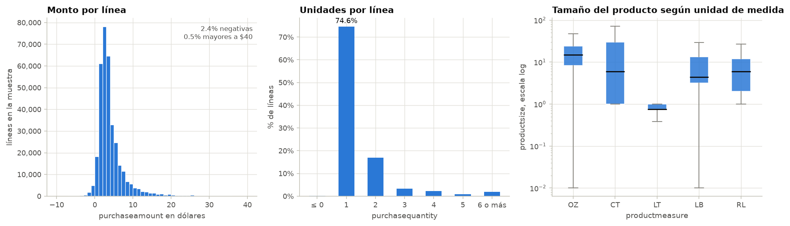
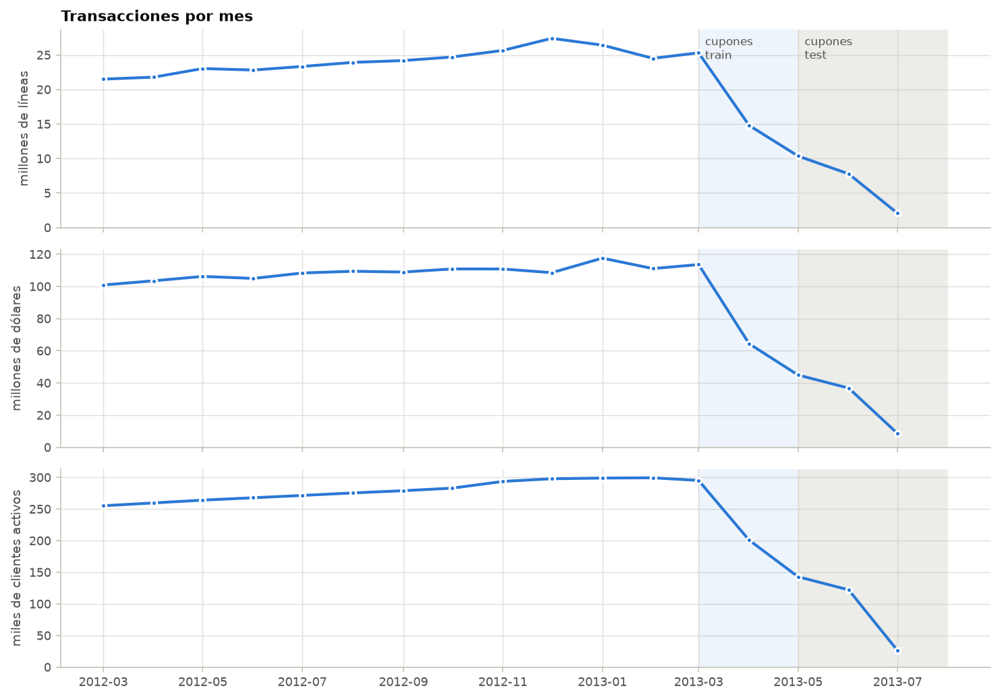
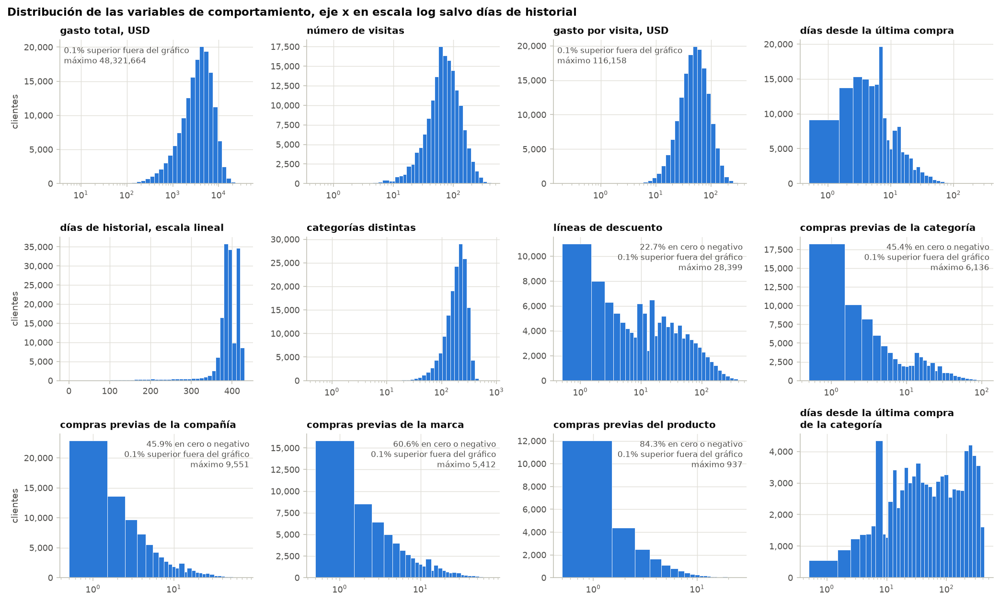
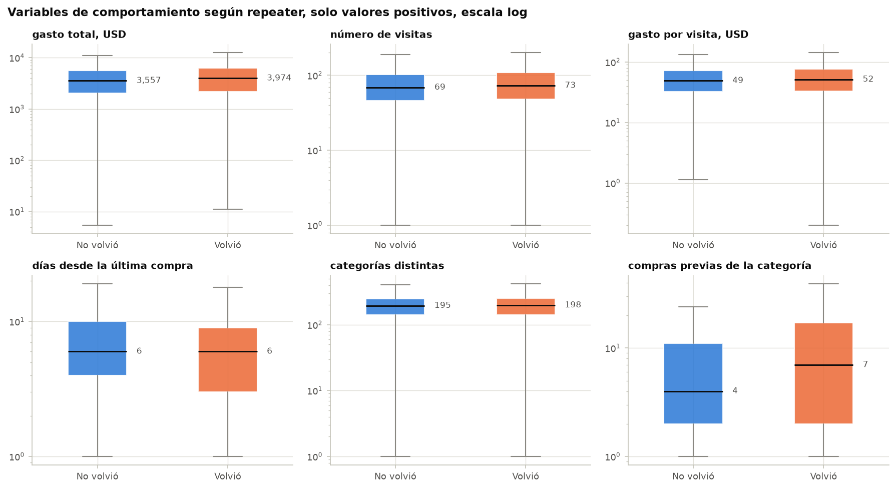
Las tasas por quintiles de recencia, frecuencia y monto permiten comparar comportamientos sin depender de la escala monetaria (figura 9). El historial con el producto ofertado constituye el hallazgo central: la recompra es aproximadamente 24.2% entre quienes no habían comprado el producto y 42.8% entre quienes sí lo habían comprado. Esta asociación justifica mostrar el historial de producto en la aplicación, pero no garantiza por sí sola una predicción correcta para cada cliente.
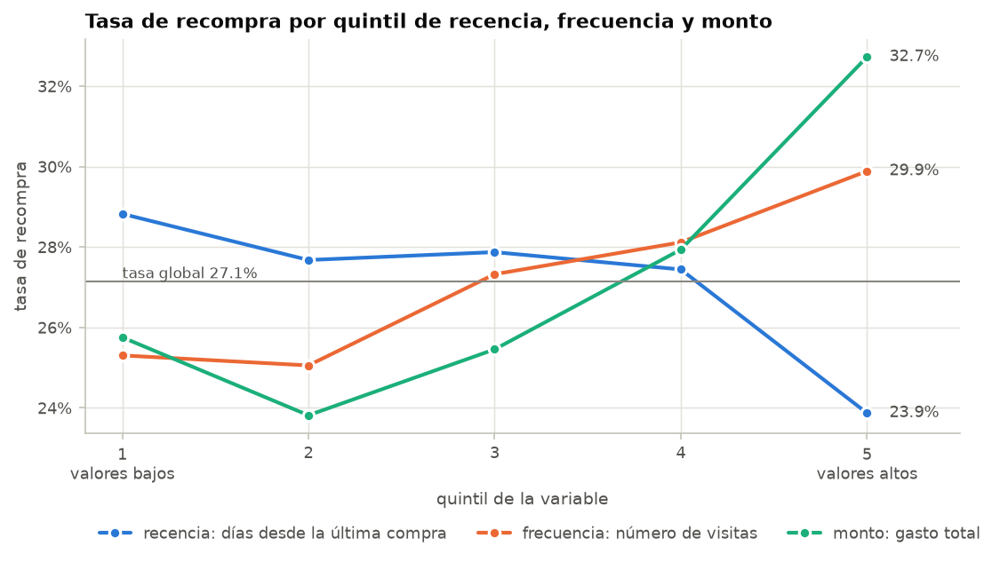
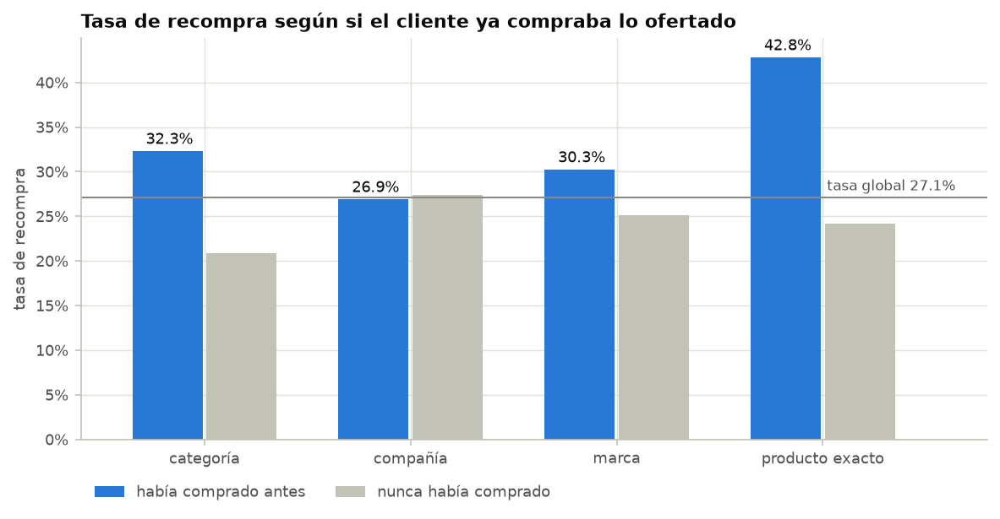
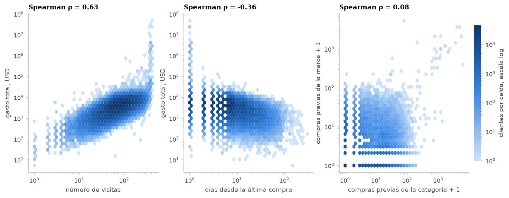
Se observaron 130 cadenas, 34 mercados, 13 categorías, 11 compañías y 12 marcas. Las figuras 12 a 16 se rehacen con etiquetas legibles, grupos ordenados y una paleta común. En las comparaciones de tasas se incorpora la referencia global y el número de clientes por grupo; en frecuencia y correlación la referencia global de recompra no corresponde a la unidad del eje.
La cadena 21 concentra 27,373 clientes y presenta 25.14% de recompra. Las cadenas 64 y 166 alcanzan 47.22% y 54.42%, con 5,889 y 3,499 clientes; la cadena 46 registra 18.53%, con 5,440. Las figuras muestran los 15 grupos con más observaciones y mantienen las tablas completas como respaldo.
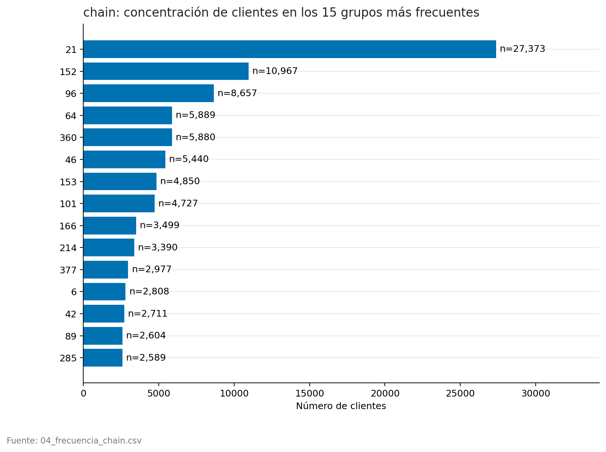
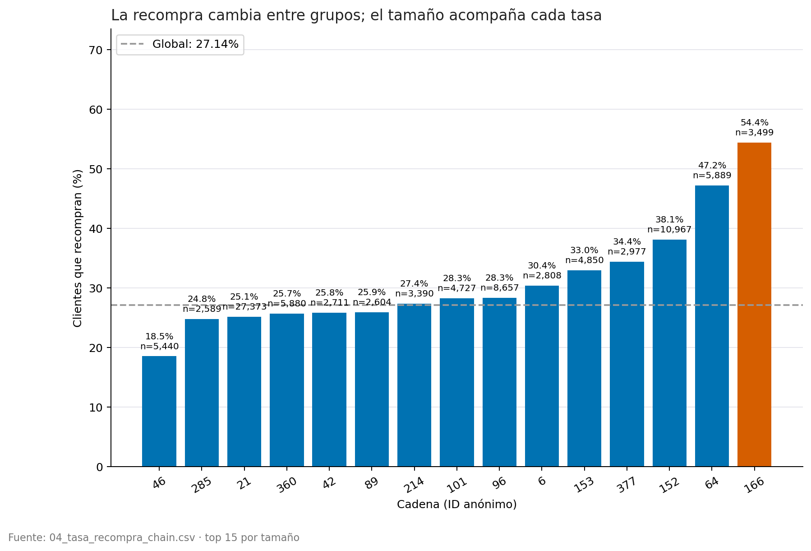
Las ofertas de hasta 1.00 registran 31.02% de recompra, con 93,859 clientes. Los intervalos 1.00–1.50 y 1.50–2.00 alcanzan 21.91% y 20.41%. El intervalo superior a 2.00 registra 30.47%, pero solo incluye 3,393 clientes: el tamaño acompaña la tasa para evitar interpretar grupos pequeños como evidencia equivalente.
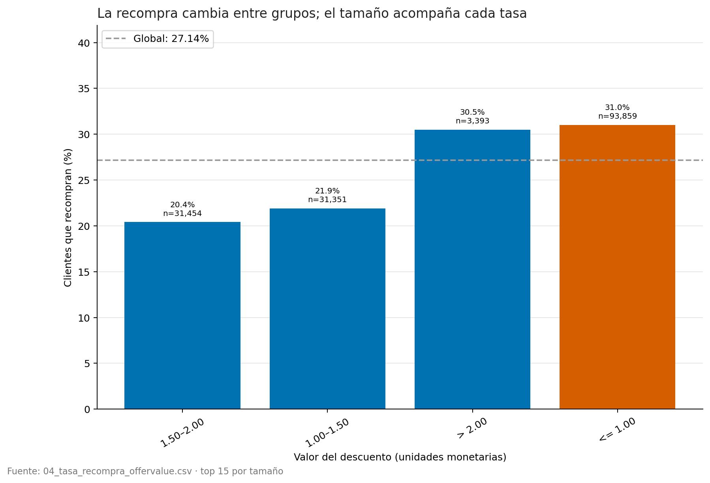
La categoría 9909 registra 44.93% con 22,147 clientes y la 2119, 43.44% con 18,767. La categoría más frecuente, 3203, registra 19.58% con 45,652 clientes. La categoría 4401 presenta 8.88%, con 15,008 clientes. Los códigos no permiten identificar productos ni explicar causalmente las diferencias.
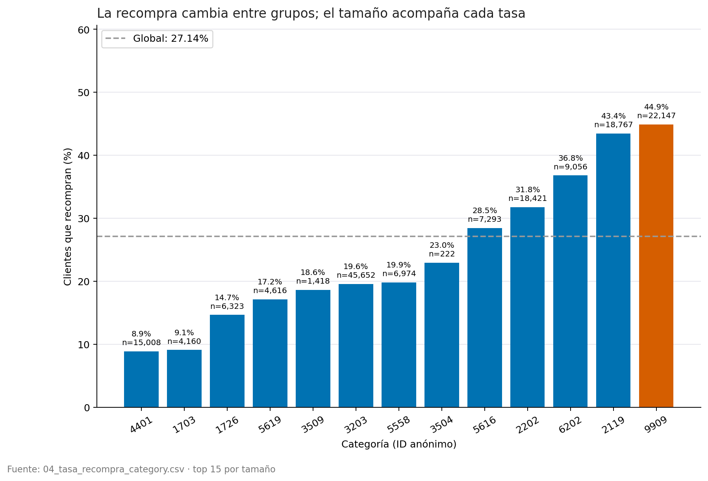
Las correlaciones de Spearman individuales con la recompra son limitadas: las mayores corresponden a compras previas de categoría, alrededor de 0.164. La matriz conserva el signo y una escala de −1 a 1 para distinguir asociaciones inversas y directas.
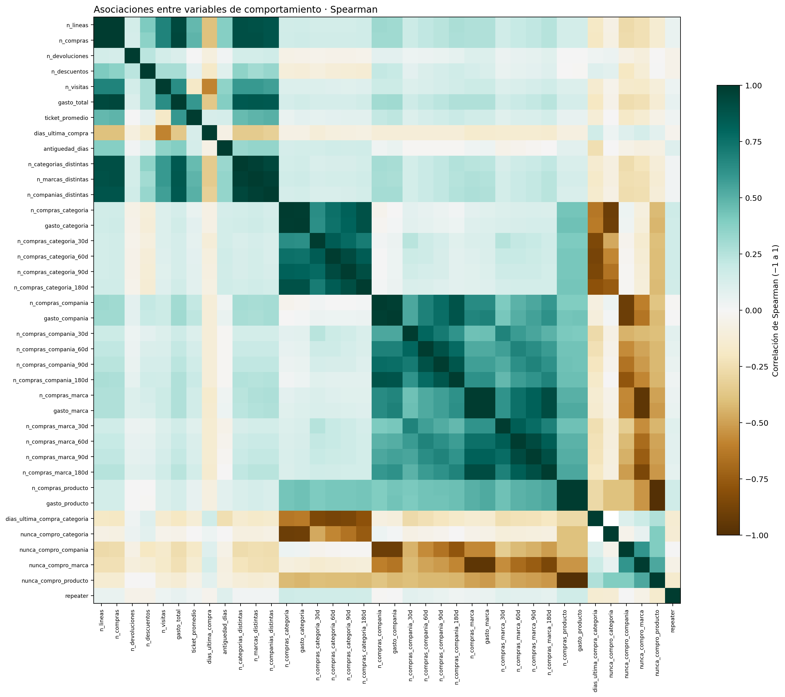
La recencia de categoría tiene 72,639 faltantes (45.38%): corresponden a ausencia de compras previas y se conservan junto a la bandera de historial. La figura 17 documenta clientes con volumen extremo, que permanecen en el conjunto limpio; su preparación específica para cada algoritmo se presenta en la sección de ajuste.
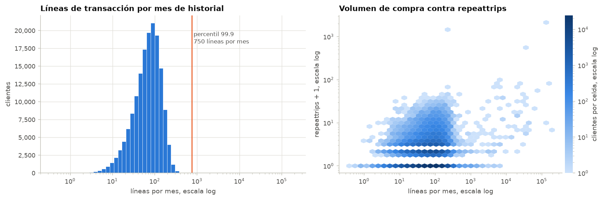
Fuentes: tablas 03 y 04 y secciones originales de EDA del repositorio. Las tasas interactivas se recalculan sobre la selección y la referencia global permanece fija.
Los modelos se ajustaron con tres bloques ordenados en el tiempo. El entrenamiento contiene 106,062 clientes con ofertas del 1 de marzo al 16 de abril de 2013 y una tasa de recompra de 23.08%. La validación contiene 18,496 clientes del 17 al 23 de abril, con 33.60% de recompra, y sirvió para elegir los hiperparámetros. La prueba contiene 35,499 clientes del 24 al 30 de abril, con 35.91% de recompra, y no se usó en este paso. La tabla completa está en la división en tres conjuntos.
Los hiperparámetros se eligieron con modelos entrenados hasta el 16 de abril. Esos modelos, la versión 1, no vieron la semana de validación, que es la más parecida a la de prueba: 33.60% de recompra frente a 35.91%, y 23.08% en el entrenamiento. Por eso, una vez elegida la configuración de cada algoritmo, se reentrenó con el entrenamiento y la validación juntos, del 1 de marzo al 23 de abril, con 124,558 clientes. Estos modelos son la versión 2 y son los modelos finales. Conservan los mismos hiperparámetros y el mismo umbral de clasificación que la versión 1, porque el umbral no puede recalcularse con una semana que el modelo ya vio.
La semana de prueba no se usó en este cuaderno. Cabe aclarar que la decisión de reentrenar se tomó después de conocer el AUC de la versión 1 en la prueba, por lo que se reportan ambas versiones. El AUC de validación de los modelos de la versión 2 no mide nada, porque ya entrenaron con esa semana; la comparación entre modelos se hace con el AUC de la semana de prueba.
Todos los modelos reciben las mismas 44 columnas de entrada de dataset_modelo.csv y calculan por dentro las variables derivadas, como las tasas por 30 días y las proporciones de compra. Lo que cambia entre algoritmos es la preparación que cada uno necesita. Todas las transformaciones se ajustan solamente con el entrenamiento y quedan guardadas dentro del mismo pipeline, de modo que un cliente nuevo se transforma igual que los de entrenamiento.
| Algoritmo | Faltantes | Escala de las variables | Cadena, mercado, categoría, compañía y marca | Desbalance de clases |
|---|---|---|---|---|
| Regresión logística | Mediana y columna que marca el faltante | Logaritmo con signo y estandarización | Una columna binaria por grupo, con los grupos de menos de 50 clientes agrupados | Se ajustó entre pesos balanceados y sin pesos |
| Random Forest | Mediana y columna que marca el faltante | Sin cambios, porque los árboles no dependen de la escala | Una columna binaria por grupo, con el mismo agrupamiento | Se ajustó entre pesos balanceados, balanceados por árbol y sin pesos |
| Gradient Boosting | El modelo usa los faltantes tal como vienen | Sin cambios | Códigos ordinales que el modelo trata como grupos, sin imponer un orden | Se ajustó entre pesos balanceados y sin pesos |
| Perceptrón multicapa | Mediana y columna que marca el faltante | Logaritmo con signo y estandarización | Una columna binaria por grupo, con el mismo agrupamiento | La implementación no admite pesos; se usa el AUC, que no depende del umbral |
La transformación logarítmica y la estandarización solo se aplican a la regresión logística y al perceptrón, que son sensibles a la escala y a las colas largas que mostró el análisis exploratorio. Los dos modelos de árboles conservan las variables en su escala original.
Se usó búsqueda aleatoria, que según Bergstra y Bengio (2012) encuentra configuraciones tan buenas o mejores que una rejilla con el mismo costo de cómputo. Cada combinación se entrenó con el bloque de entrenamiento, hasta el 16 de abril, y se puntuó con el AUC de la semana de validación. Se probaron 30 combinaciones para la regresión logística, 20 para Random Forest, 40 para Gradient Boosting y 20 para el perceptrón. Los rangos siguen la revisión bibliográfica y todas las combinaciones probadas están en la tabla de búsqueda.
Como referencia se entrenó cada algoritmo con la configuración por defecto de scikit-learn y la misma preparación de variables. La comparación con la configuración ajustada es la siguiente.
| Algoritmo | AUC por defecto | AUC ajustado | Mejora |
|---|---|---|---|
| Regresión logística | 0.660 | 0.662 | +0.002 |
| Random Forest | 0.651 | 0.680 | +0.029 |
| Gradient Boosting | 0.672 | 0.680 | +0.008 |
| Perceptrón multicapa | 0.637 | 0.684 | +0.047 |
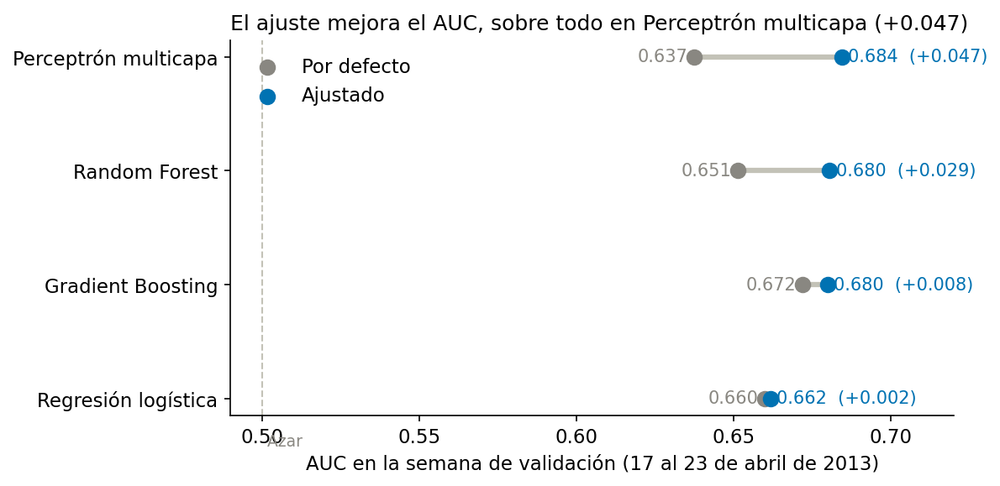
El ajuste ayudó más a los algoritmos con más hiperparámetros sensibles. El perceptrón mejoró 0.047 y el Random Forest 0.029, mientras que la regresión logística casi no cambió, porque su configuración por defecto ya era razonable. Gradient Boosting partió de la mejor configuración por defecto y mejoró 0.008. Las cifras de las tablas están en la mejora por ajuste.
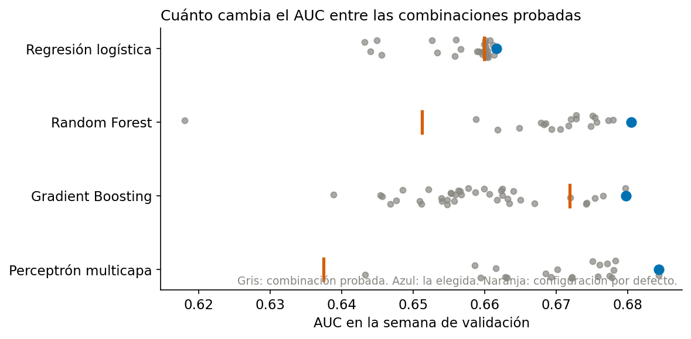
Los valores elegidos fueron los siguientes.
Dos precauciones al leer estas cifras. Primero, la configuración ajustada se eligió por su AUC en la semana de validación, así que ese valor es algo optimista; la medida que se reporta para comparar los modelos es la de la semana de prueba. Segundo, la semana de validación tiene una tasa de recompra de 33.60% frente a 23.08% en el entrenamiento, por lo que parte de las diferencias entre configuraciones puede deberse a ese cambio de comportamiento y no solo al algoritmo.
Para saber qué variables usa cada modelo se permutó cada una de las 44 columnas de entrada en la semana de validación y se midió cuánto AUC pierde el modelo congelado. Una pérdida grande indica que el modelo depende de esa variable. Cada medida es el promedio de cinco permutaciones. Los valores están en la importancia por permutación.
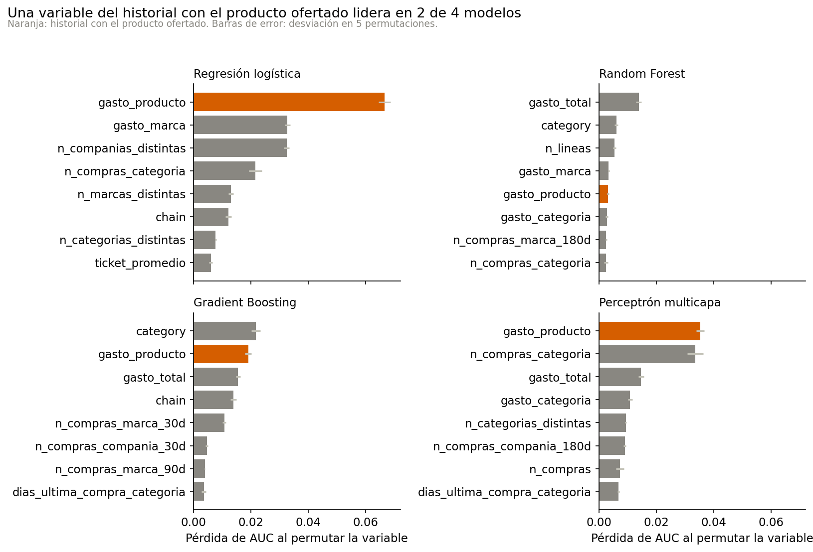
El gasto previo en el producto ofertado es la variable más importante de la regresión logística, con una pérdida de 0.067, y del perceptrón, con 0.035. En Gradient Boosting ocupa el segundo lugar, con 0.019, detrás de la categoría del producto. En el Random Forest el primer lugar es el gasto total, con 0.014, y el gasto en el producto queda en quinto lugar. Es decir, el historial con el producto ofertado, que fue el hallazgo central del análisis exploratorio, sigue entre las variables de mayor peso en tres de los cuatro modelos. El Random Forest reparte el peso entre más variables, ninguna con una pérdida mayor de 0.014.
Las pérdidas son pequeñas en todos los casos. Eso es coherente con un AUC cercano a 0.68: ninguna variable por sí sola explica la recompra y la señal está repartida entre muchas.
Los cuatro modelos versión 2 se reentrenaron con los datos del 1 de marzo al 23 de abril de 2013, conservando los hiperparámetros y umbrales elegidos previamente en validación. Después se evaluaron una sola vez en la semana de prueba, del 24 al 30 de abril, formada por 35,499 clientes. La prueba no intervino en el ajuste. El AUC fue la medida principal; precisión, sensibilidad y F1 se calcularon con el umbral de validación propio de cada modelo.
| Modelo | AUC | Precisión | Sensibilidad | F1 | Entrenamiento (s) | Predicción (s) |
|---|---|---|---|---|---|---|
| Regresión logística | 0.6470 | 0.3936 | 0.8848 | 0.5448 | 10.02 | 0.10 |
| Perceptrón multicapa | 0.6461 | 0.4154 | 0.7476 | 0.5341 | 10.69 | 0.12 |
| Random Forest | 0.6151 | 0.3764 | 0.8169 | 0.5153 | 53.74 | 0.34 |
| Gradient Boosting | 0.6121 | 0.3846 | 0.7622 | 0.5112 | 0.70 | 0.07 |
La regresión logística obtuvo el mayor AUC y F1, aunque su ventaja de AUC frente al perceptrón fue de solo 0.0009. El perceptrón logró la mayor precisión y produjo menos clasificaciones positivas. Por ello, ambos modelos muestran una capacidad de discriminación prácticamente equivalente; la elección entre ellos depende del costo de contactar clientes adicionales.
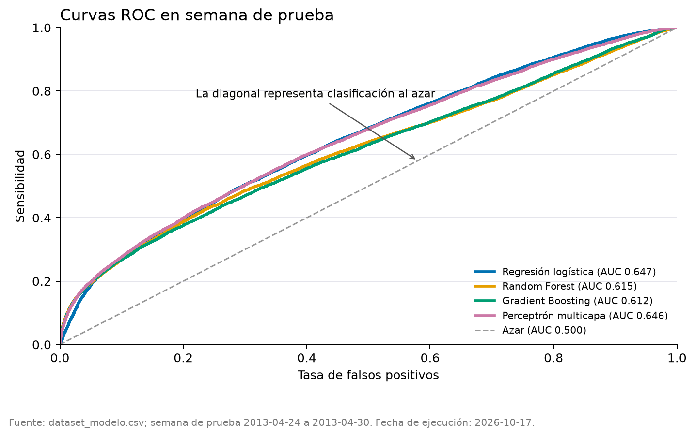
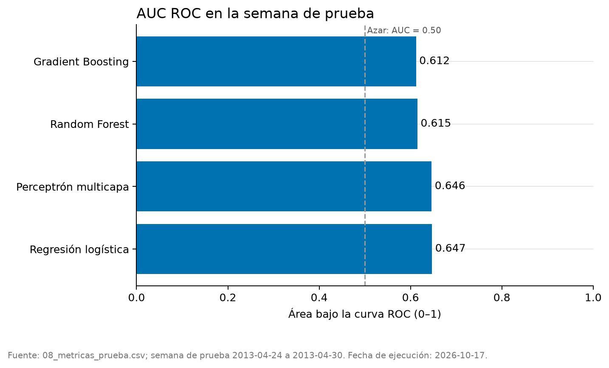
El modelo logístico de la fase exploratoria obtuvo un AUC de 0.6446 sobre la misma semana de prueba, también con entrenamiento hasta el 23 de abril. Frente a esa referencia comparable, la regresión logística versión 2 mejoró 0.0024 y el perceptrón 0.0015; Random Forest y Gradient Boosting quedaron 0.0295 y 0.0325 por debajo, respectivamente.
La versión 1 de cada modelo se entrenó solo hasta el 16 de abril; la versión 2 agregó la semana de validación y conservó los mismos hiperparámetros. La tabla compara el AUC de ambas en la semana de prueba. Las cifras de la versión 1 corresponden a la primera ejecución de este cuaderno.
| Modelo | AUC versión 1 | AUC versión 2 | Cambio |
|---|---|---|---|
| Regresión logística | 0.6026 | 0.6470 | +0.0444 |
| Perceptrón multicapa | 0.6122 | 0.6461 | +0.0339 |
| Random Forest | 0.6019 | 0.6151 | +0.0132 |
| Gradient Boosting | 0.6133 | 0.6121 | −0.0012 |
Agregar la semana más reciente mejoró a tres de los cuatro modelos y cambió el orden: con la versión 1, Gradient Boosting tenía el mayor AUC. La semana de validación se parece más a la de prueba, con 33.60% de recompra frente a 35.91%. Además, con ella los modelos pasaron de conocer 7 a conocer 11 de las 12 ofertas que aparecen en la prueba, así que parte de la mejora se explica porque ya habían visto esas ofertas. La sección de ofertas no vistas analiza ese efecto.
Gradient Boosting fue el más rápido, con 0.70 segundos de entrenamiento y 0.07 segundos de predicción, pero obtuvo el menor AUC. La regresión logística y el perceptrón necesitaron cerca de 10 segundos para entrenarse y superaron 0.646 de AUC. Se toma la regresión logística como modelo de referencia por alcanzar el mayor AUC, sensibilidad y F1, sin una carga de cómputo relevante. El perceptrón es una alternativa razonable si se prefiere reducir la cantidad de clientes clasificados como recompra.
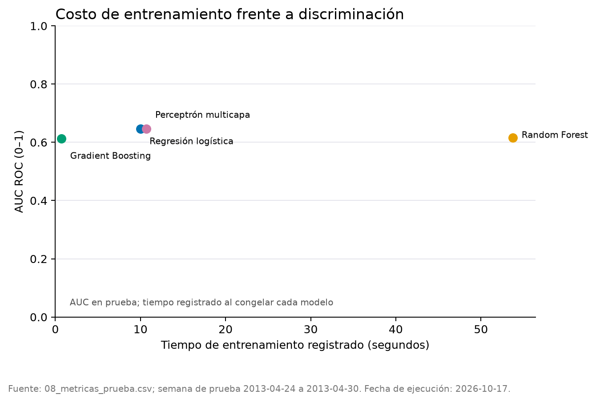
Las matrices usan el umbral seleccionado en validación para cada modelo, igual que la tabla principal. La regresión logística clasificó como recompra al 80.7% de los clientes; el perceptrón, al 64.6%; Random Forest, al 77.9%; y Gradient Boosting, al 71.2%. Estas proporciones explican la sensibilidad alta y la precisión moderada: los umbrales favorecen detectar recompradores, pero también generan falsos positivos. Antes del despliegue deben recalibrarse según el costo del descuento y el valor esperado de una recompra, sin usar la semana de prueba para optimizarlos.
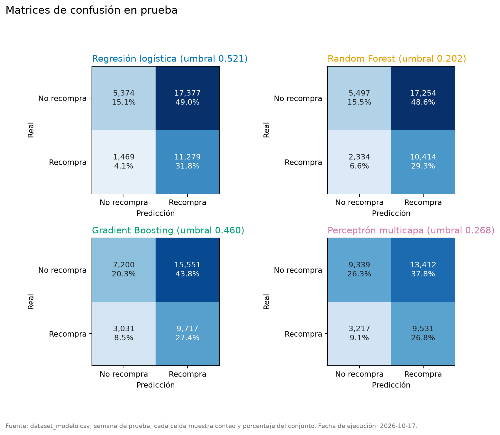
Una oferta cuenta como vista si aparece en los datos con que se entrenaron los modelos versión 2, del 1 de marzo al 23 de abril. Con ese criterio, 33,086 clientes de la semana de prueba, el 93.2%, recibieron una de las 11 ofertas ya vistas, y solo 2,413, el 6.8%, recibieron la única oferta nueva. Por lo tanto, la semana de prueba mide sobre todo el desempeño con ofertas conocidas.
| Modelo | AUC con ofertas vistas | AUC con la oferta no vista | Diferencia |
|---|---|---|---|
| Regresión logística | 0.6552 | 0.5710 | −0.0841 |
| Perceptrón multicapa | 0.6507 | 0.5871 | −0.0636 |
| Random Forest | 0.6206 | 0.5664 | −0.0542 |
| Gradient Boosting | 0.6185 | 0.5757 | −0.0428 |
Los cuatro modelos pierden AUC con la oferta nueva. Los que más ganaron al incorporar la semana de validación, la regresión logística y el perceptrón, son también los que más pierden. Como el grupo no visto es una sola oferta, esta comparación es solo indicativa.
La situación del conjunto de prueba de Kaggle es distinta: allí el 96.3% de los clientes recibió ofertas ausentes del entrenamiento. Para medir ese caso se usaron cinco divisiones GroupShuffleSplit que reservaron ofertas completas. En cada división los modelos se reentrenan con los hiperparámetros de su ficha, por lo que este resultado no depende de la versión 1 o 2.
| Modelo | AUC medio | Desviación estándar | Mínimo | Máximo |
|---|---|---|---|---|
| Gradient Boosting | 0.6197 | 0.0659 | 0.5460 | 0.6934 |
| Random Forest | 0.6107 | 0.0349 | 0.5803 | 0.6654 |
| Regresión logística | 0.6090 | 0.0518 | 0.5454 | 0.6820 |
| Perceptrón multicapa | 0.5824 | 0.0590 | 0.5321 | 0.6800 |
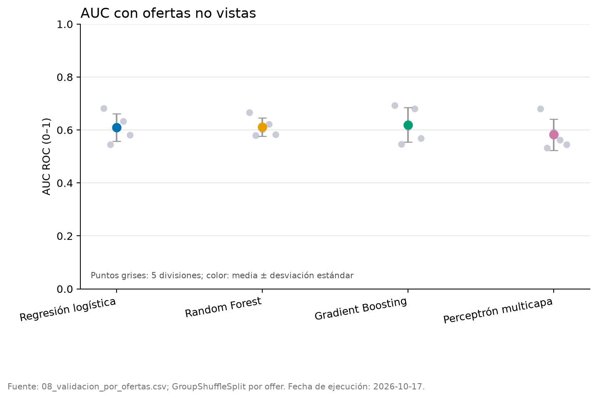
Con ofertas nuevas, Gradient Boosting obtuvo el mayor AUC medio, 0.6197, y la regresión logística el tercero, 0.6090. La diferencia, 0.0107, es menor que la desviación estándar de ambos modelos, así que con ofertas nuevas ningún algoritmo se distingue con claridad. La regresión logística se mantiene como modelo de referencia porque obtuvo el mayor AUC en la semana de prueba, su desempeño con ofertas nuevas queda dentro del rango de los demás y es el más sencillo de interpretar. Aun así, su rendimiento debe vigilarse en cada campaña que traiga ofertas nuevas.
Las cifras provienen de results/tables/08_metricas_prueba.csv, 08_predicciones_prueba.parquet y 08_validacion_por_ofertas.csv, generadas por el notebook 08 ejecutado con cargar_modelos(version=2). Las ofertas vistas se definen respecto del entrenamiento y la validación, que son los datos de los modelos versión 2. Las predicciones individuales permiten reconstruir las curvas ROC y matrices sin reentrenar los modelos.
La aplicación permite recorrer tres tareas desde Inicio: explorar el conjunto limpio, clasificar clientes y consultar el rendimiento. Se implementó con Streamlit para reutilizar los módulos de Python del proyecto, el preprocesamiento y los modelos congelados; Plotly permite consultar puntos, seleccionar series y ampliar rangos sin generar nuevas imágenes. Los datos de exploración y evaluación se almacenan en caché y se invalidan cuando cambia el archivo de origen. Las páginas de exploración y rendimiento no cargan modelos.
Explorar datos ofrece filtros combinables de oferta, cadena y categoría, indicadores del tamaño de selección y la recompra, y una referencia global fija de 27.14%. Una primera gráfica compara clientes con y sin historial de compra del producto. Las tasas y tamaños se recalculan con cada selección; la anotación aclara el hallazgo del conjunto completo. Una segunda gráfica compara las tasas de los 15 grupos más frecuentes de la dimensión elegida. La distribución de variables prioriza las entradas declaradas en el manifiesto de modelos y permite consultar faltantes, estadísticas y el diccionario. La página permite descargar los clientes filtrados. Si una combinación no tiene datos, muestra un mensaje y permite corregir los filtros.
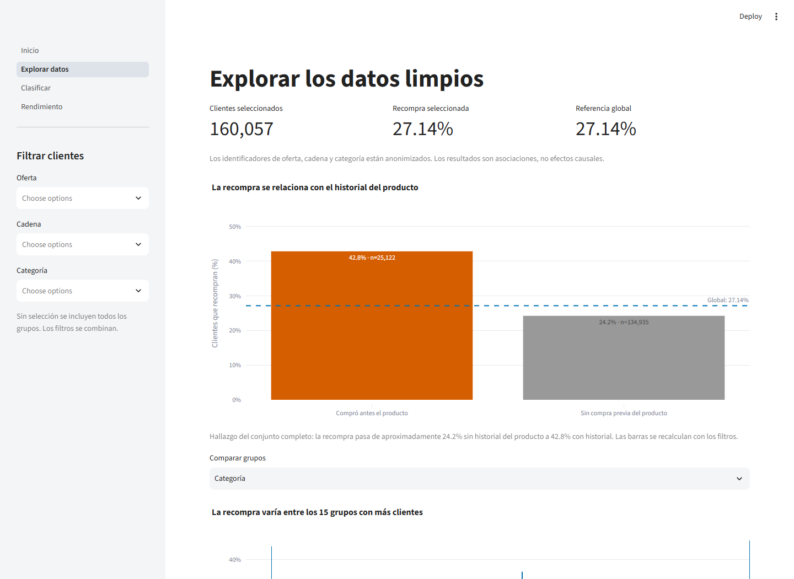
La página de Joel acepta transacciones de un cliente o un cliente de ejemplo, prepara las entradas mediante las funciones compartidas del entrenamiento y compara las probabilidades de uno o todos los algoritmos congelados. La explicación completa, las capturas y las reglas de validación están en 08b_clasificar_y_preprocesamiento.md, que forma parte de la integración del informe.
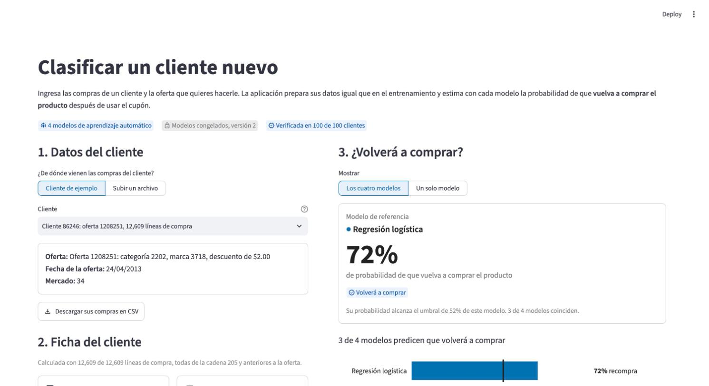
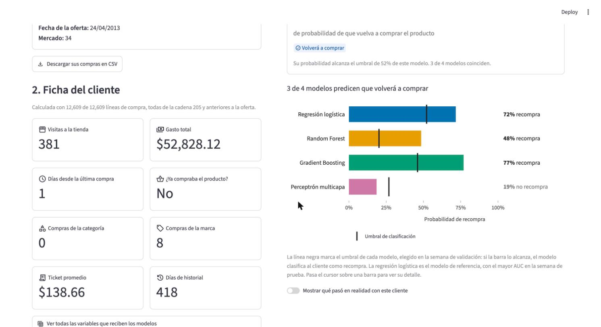
Rendimiento lee las métricas, probabilidades y divisiones agrupadas de las tres tablas 08 de Fernando. Muestra curvas ROC de los modelos seleccionados, una matriz de confusión con umbral ajustable, precisión, sensibilidad y F1 recalculados, y una comparación de las métricas oficiales. Las métricas oficiales conservan los umbrales elegidos en validación; el control de umbral es exploratorio y no cambia la evaluación oficial ni selecciona hiperparámetros con la prueba. La AUC permanece independiente del umbral.
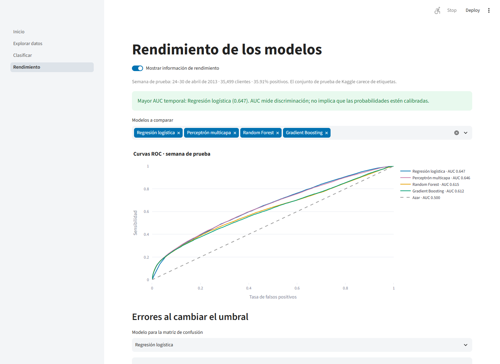
Se distingue explícitamente la semana de prueba temporal, del 24 al 30 de abril de 2013, de la validación agrupada por oferta. Esta última muestra la media y desviación estándar de AUC y el número de divisiones. También se presentan las AUC temporales por ofertas vistas y no vistas cuando están disponibles. El conjunto de prueba de Kaggle carece de etiquetas y no se presenta como una evaluación supervisada.
Un interruptor situado antes de los resultados oculta toda la información de rendimiento. Si faltan las tablas requeridas, la página muestra cómo generarlas, sin entrenar ni estimar resultados de reemplazo.
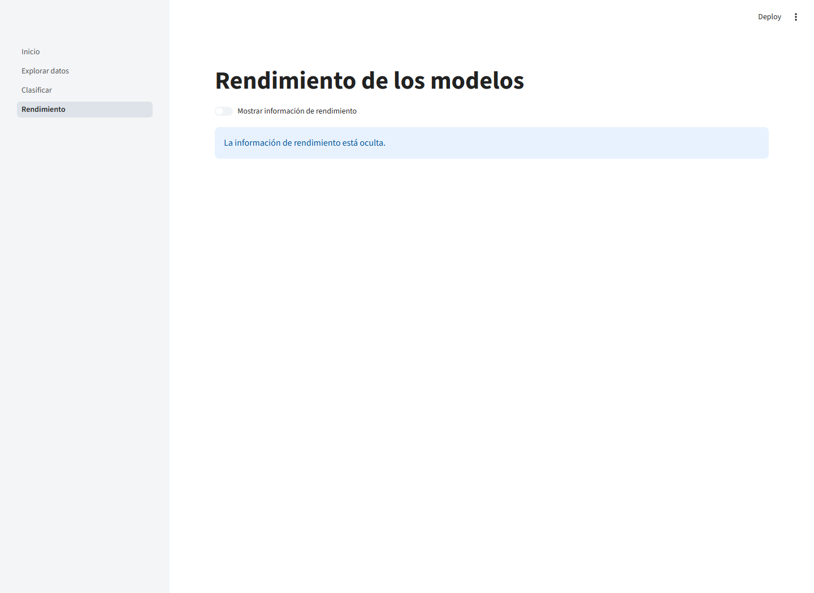
Se utiliza la paleta Okabe-Ito del módulo común de Joel. El azul #0072B2 guía la navegación y las comparaciones generales; el bermellón #D55E00 destaca el hallazgo y el gris proporciona contexto. Regresión logística, Random Forest, Gradient Boosting y perceptrón multicapa conservan sus colores azul, naranja, verde y rosa en todas las páginas. Nombres, cifras y etiquetas acompañan el color para no depender de su percepción. Las barras de tasas parten de cero y la correlación utiliza una escala divergente centrada en cero. El tema tiene fondo claro, texto oscuro y rejillas discretas.
Las comprobaciones automáticas de las páginas y controles se documentan en verificacion_nery.md. La tabla de Joel 09_verificacion_app.csv registra la comparación de variables y probabilidades en 100 clientes; esta evidencia pertenece a su módulo y no sustituye una prueba de usabilidad. La prueba con una persona externa permanece pendiente y su protocolo está en informe/presentacion_nery.md.
Para la conclusión del objetivo 5: Nery aporta las vistas de exploración y rendimiento y su verificación funcional; la coincidencia de entradas y probabilidades debe atribuirse a la verificación de Joel. No se afirma que la interfaz haya sido validada por una persona externa antes de realizar esa sesión.
La página Clasificar permite ingresar los datos de un cliente nuevo y ver la probabilidad de que vuelva a comprar según cada algoritmo. Cubre dos requisitos de la guía: ingresar nuevos datos para que el sistema los clasifique con los modelos entrenados y ver el resultado de cada algoritmo por separado o de todos.
El usuario puede ingresar al cliente de dos formas:
Las compras crudas no son lo que reciben los modelos: hay que resumirlas en una fila por cliente con las mismas variables del entrenamiento. Ese paso corre por detrás, en el módulo src/entrada_app.py, y el usuario solo ve el resultado en la ficha del cliente.
Para garantizar que un cliente nuevo se transforme exactamente igual que los clientes de entrenamiento, el módulo no reescribe ningún cálculo. Usa las mismas funciones de src/preprocesamiento.py que construyeron el conjunto de datos de los modelos, con las mismas reglas:
Antes de calcular, el módulo revisa los datos y responde con un mensaje claro en lugar de un error del programa:
| Situación | Respuesta de la aplicación |
|---|---|
| El archivo no es un CSV o está vacío | Pide revisar el formato del archivo |
| Faltan columnas necesarias | Indica cuáles faltan |
| El archivo trae compras de varios clientes | Pide subir un solo cliente |
| Hay líneas con fechas o montos ilegibles | Las descarta y avisa cuántas fueron |
| Hay compras de otras cadenas | Usa solo la cadena con más compras y avisa |
| Hay compras en la fecha de la oferta o después | Las ignora y avisa |
| El cliente no tiene compras previas | Clasifica solo con los datos de la oferta y advierte que el resultado es menos confiable |
La página carga los cuatro modelos congelados de la versión 2 una sola vez y solo les pide predicciones; nunca los vuelve a entrenar. Antes de usarlos, el cargador comprueba que cada archivo no haya cambiado y que la versión de scikit-learn sea la misma con que se entrenaron.
La página se divide en dos columnas: a la izquierda los datos y la ficha del cliente, y a la derecha el resultado, para ver ambos sin desplazarse. El resultado empieza con una tarjeta que destaca la probabilidad que asigna la regresión logística, el modelo de referencia, si alcanza su umbral y cuántos de los cuatro modelos coinciden con ella.
El usuario elige ver los cuatro modelos o uno solo. Para cada modelo, la gráfica muestra:
El título de la gráfica resume la respuesta, por ejemplo "3 de 4 modelos predicen que volverá a comprar". Con un cliente de ejemplo, el usuario también puede revelar qué pasó en la realidad y compararlo con la predicción.
Debajo, una segunda gráfica conecta la predicción con el hallazgo central del análisis exploratorio. Entre los clientes que ya habían comprado el producto ofertado, el 42.8% volvió a comprar, frente al 24.2% de los que nunca lo habían comprado. La gráfica resalta el grupo al que pertenece el cliente, para que el usuario entienda por qué los modelos le asignan esa probabilidad.
Para comprobar que la aplicación prepara y clasifica igual que el entrenamiento, se procesaron los 100 clientes de ejemplo de la semana de prueba con el mismo módulo y los mismos modelos que usa la página. El script src/verificar_entrada_app.py hizo dos comparaciones:
Los 100 clientes coincidieron en todo, lo que cumple la condición del objetivo específico 5. El resultado está en results/tables/09_verificacion_app.csv, y la comprobación se puede repetir con las pruebas automáticas de tests/test_entrada_app.py.
El objetivo general se cumplió: la regresión logística versión 2 obtuvo el mejor resultado en la semana de prueba, con AUC 0.6470, sensibilidad 0.8848 y F1 0.5448. El perceptrón multicapa quedó prácticamente empatado en discriminación, con AUC 0.6461, y alcanzó la mayor precisión, 0.4154. Se selecciona la regresión logística como modelo de referencia por su mayor AUC y F1, aunque el perceptrón constituye una alternativa si se busca reducir la cantidad de contactos positivos.
El objetivo específico 1 se cumplió al evaluar regresión logística, Random Forest, Gradient Boosting y perceptrón multicapa sobre la misma semana futura. Sus AUC fueron 0.6470, 0.6151, 0.6121 y 0.6461, respectivamente. El reentrenamiento hasta el 23 de abril cambió el orden observado con la primera versión y confirmó la importancia de incorporar toda la información disponible antes de la prueba final.
El objetivo específico 2 se cumplió mediante la búsqueda aleatoria de hiperparámetros en la semana de validación. Frente a la configuración por defecto, el ajuste aumentó el AUC de validación en 0.0017 para la regresión logística, 0.0293 para Random Forest, 0.0079 para Gradient Boosting y 0.0469 para el perceptrón multicapa. Los algoritmos con más hiperparámetros sensibles fueron los que más ganaron. Los hiperparámetros y umbrales se conservaron al reentrenar la versión 2 con entrenamiento y validación, por lo que la semana de prueba no intervino en su elección.
El objetivo específico 3 se cumplió al contrastar ofertas vistas y no vistas. Para los modelos versión 2, el 93.2% de los clientes de la semana de prueba recibió ofertas ya vistas y solo una oferta, con 2,413 clientes, fue nueva; con ella los cuatro modelos perdieron entre 0.0428 y 0.0841 de AUC. Para ofertas completamente nuevas, como las que recibió el 96.3% de los clientes del conjunto de prueba de Kaggle, las cinco divisiones agrupadas por oferta dieron un AUC medio de 0.6197 para Gradient Boosting y de 0.6090 para la regresión logística, con desviaciones estándar de 0.0659 y 0.0518. La diferencia entre ambos es menor que esa variación, así que con ofertas nuevas ningún algoritmo se distingue con claridad. La predicción se degrada con ofertas nuevas y su rendimiento debe vigilarse en cada campaña.
El objetivo específico 4 se cumplió mediante importancia por permutación. Se calculó con los modelos versión 1 en la semana de validación, porque los modelos versión 2 ya entrenaron con esa semana. Al permutar el gasto previo en el producto ofertado, el AUC cayó 0.0666 en la regresión logística y 0.0354 en el perceptrón multicapa, la mayor caída en ambos. En Gradient Boosting la mayor caída fue la de la categoría de la oferta, 0.0217, seguida del gasto en el producto, 0.0191. El historial relacionado con el producto y su categoría sostiene una parte importante de la predicción, como anticipó el análisis exploratorio.
Para apoyar la integración de la aplicación se generó 08_predicciones_prueba.parquet, con 35,499 filas y una probabilidad por modelo. La coincidencia entre la aplicación y estos resultados debe verificarse mediante una prueba de integración antes de declararla completa.
Los umbrales de validación clasificaron como recompra entre 64.6% y 80.7% de los clientes. Esta amplitud favorece la sensibilidad, pero produce numerosos falsos positivos. Antes del despliegue se recomienda calibrar las probabilidades y elegir el umbral mediante una función de valor esperado que incorpore el costo del descuento, el margen de la recompra y el costo de contactar a un cliente que no volverá.
Ahmad, A. K., Jafar, A., & Aljoumaa, K. (2019). Customer churn prediction in telecom using machine learning in big data platform. Journal of Big Data, 6(1), Artículo 28. https://journalofbigdata.springeropen.com/articles/10.1186/s40537-019-0191-6
Bergstra, J., & Bengio, Y. (2012). Random search for hyper-parameter optimization. Journal of Machine Learning Research, 13(10), 281–305. https://jmlr.org/papers/v13/bergstra12a.html
Breiman, L. (2001). Random forests. Machine Learning, 45(1), 5–32. https://link.springer.com/article/10.1023/A:1010933404324
Buckinx, W., & Van den Poel, D. (2005). Customer base analysis: Partial defection of behaviourally loyal clients in a non-contractual FMCG retail setting. European Journal of Operational Research, 164(1), 252–268. https://www.sciencedirect.com/science/article/pii/S0377221703009184
Burez, J., & Van den Poel, D. (2009). Handling class imbalance in customer churn prediction. Expert Systems with Applications, 36(3), 4626–4636. https://www.sciencedirect.com/science/article/pii/S0957417408002121
Chawla, N. V., Bowyer, K. W., Hall, L. O., & Kegelmeyer, W. P. (2002). SMOTE: Synthetic minority over-sampling technique. Journal of Artificial Intelligence Research, 16, 321–357. https://www.jair.org/index.php/jair/article/view/10302
Chen, T., & Guestrin, C. (2016). XGBoost: A scalable tree boosting system. En Proceedings of the 22nd ACM SIGKDD International Conference on Knowledge Discovery and Data Mining (pp. 785–794). ACM. https://www.kdd.org/kdd2016/papers/files/rfp0697-chenAemb.pdf
Christy, A. J., Umamakeswari, A., Priyatharsini, L., & Neyaa, A. (2021). RFM ranking – An effective approach to customer segmentation. Journal of King Saud University – Computer and Information Sciences, 33(10), 1251–1257. https://www.sciencedirect.com/science/article/pii/S1319157818304178
Cox, D. R. (1958). The regression analysis of binary sequences. Journal of the Royal Statistical Society: Series B (Methodological), 20(2), 215–232. https://academic.oup.com/jrsssb/article/20/2/215/7027376
De Caigny, A., Coussement, K., & De Bock, K. W. (2018). A new hybrid classification algorithm for customer churn prediction based on logistic regression and decision trees. European Journal of Operational Research, 269(2), 760–772. https://www.sciencedirect.com/science/article/pii/S0377221718301243
Fawcett, T. (2006). An introduction to ROC analysis. Pattern Recognition Letters, 27(8), 861–874. https://www.sciencedirect.com/science/article/pii/S016786550500303X
Friedman, J. H. (2001). Greedy function approximation: A gradient boosting machine. The Annals of Statistics, 29(5), 1189–1232. https://projecteuclid.org/journals/annals-of-statistics/volume-29/issue-5/Greedy-function-approximation-A-gradient-boosting-machine/10.1214/aos/1013203451.full
Grinsztajn, L., Oyallon, E., & Varoquaux, G. (2022). Why do tree-based models still outperform deep learning on typical tabular data? En Advances in Neural Information Processing Systems 35 (pp. 507–520). Curran Associates. https://proceedings.neurips.cc/paper_files/paper/2022/hash/0378c7692da36807bdec87ab043cdadc-Abstract-Datasets_and_Benchmarks.html
Kaggle. (2014). Acquire valued shoppers challenge. Predict which shoppers will become repeat buyers [Conjunto de datos y descripción de la competencia]. https://www.kaggle.com/competitions/acquire-valued-shoppers-challenge/data
Ke, G., Meng, Q., Finley, T., Wang, T., Chen, W., Ma, W., Ye, Q., & Liu, T.-Y. (2017). LightGBM: A highly efficient gradient boosting decision tree. En Advances in Neural Information Processing Systems 30. Curran Associates. https://proceedings.neurips.cc/paper/2017/hash/6449f44a102fde848669bdd9eb6b76fa-Abstract.html
Larivière, B., & Van den Poel, D. (2005). Predicting customer retention and profitability by using random forests and regression forests techniques. Expert Systems with Applications, 29(2), 472–484. https://www.sciencedirect.com/science/article/pii/S0957417405000965
Lemmens, A., & Croux, C. (2006). Bagging and boosting classification trees to predict churn. Journal of Marketing Research, 43(2), 276–286. https://journals.sagepub.com/doi/10.1509/jmkr.43.2.276
Lessmann, S., Baesens, B., Seow, H.-V., & Thomas, L. C. (2015). Benchmarking state-of-the-art classification algorithms for credit scoring: An update of research. European Journal of Operational Research, 247(1), 124–136. https://www.sciencedirect.com/science/article/pii/S0377221715004208
Liu, G., Nguyen, T. T., Zhao, G., Zha, W., Yang, J., Cao, J., Wu, M., Zhao, P., & Chen, W. (2016). Repeat buyer prediction for e-commerce. En Proceedings of the 22nd ACM SIGKDD International Conference on Knowledge Discovery and Data Mining (pp. 155–164). ACM. https://www.kdd.org/kdd2016/papers/files/adf0160-liuA.pdf
Martínez, A., Schmuck, C., Pereverzyev, S., Pirker, C., & Haltmeier, M. (2020). A machine learning framework for customer purchase prediction in the non-contractual setting. European Journal of Operational Research, 281(3), 588–596. https://www.sciencedirect.com/science/article/pii/S0377221718303370
Neslin, S. A., Gupta, S., Kamakura, W., Lu, J., & Mason, C. H. (2006). Defection detection: Measuring and understanding the predictive accuracy of customer churn models. Journal of Marketing Research, 43(2), 204–211. https://journals.sagepub.com/doi/10.1509/jmkr.43.2.204
Pedregosa, F., Varoquaux, G., Gramfort, A., Michel, V., Thirion, B., Grisel, O., Blondel, M., Prettenhofer, P., Weiss, R., Dubourg, V., Vanderplas, J., Passos, A., Cournapeau, D., Brucher, M., Perrot, M., & Duchesnay, É. (2011). Scikit-learn: Machine learning in Python. Journal of Machine Learning Research, 12(85), 2825–2830. https://jmlr.org/papers/v12/pedregosa11a.html
Ren, X., Cao, J., Xu, X., & Gong, Y. (2021). A two-stage model for forecasting consumers' intention to purchase with e-coupons. Journal of Retailing and Consumer Services, 59, Artículo 102289. https://www.sciencedirect.com/science/article/pii/S0969698920312972
Rumelhart, D. E., Hinton, G. E., & Williams, R. J. (1986). Learning representations by back-propagating errors. Nature, 323(6088), 533–536. https://www.nature.com/articles/323533a0
Shwartz-Ziv, R., & Armon, A. (2022). Tabular data: Deep learning is not all you need. Information Fusion, 81, 84–90. https://www.sciencedirect.com/science/article/pii/S1566253521002360
Verbeke, W., Dejaeger, K., Martens, D., Hur, J., & Baesens, B. (2012). New insights into churn prediction in the telecommunication sector: A profit driven data mining approach. European Journal of Operational Research, 218(1), 211–229. https://www.sciencedirect.com/science/article/pii/S0377221711008599
Zhang, M., Lu, J., Ma, N., Cheng, T. C. E., & Hua, G. (2022). A feature engineering and ensemble learning based approach for repeated buyers prediction. International Journal of Computers Communications & Control, 17(6), Artículo 4988. https://univagora.ro/jour/index.php/ijccc/article/view/4988